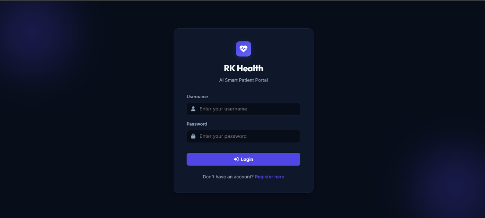
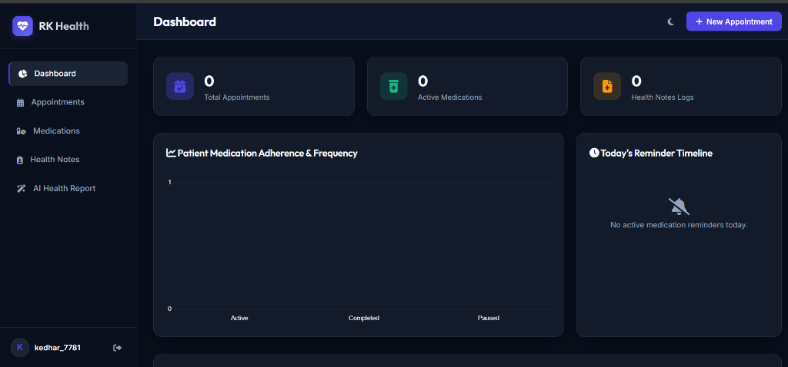
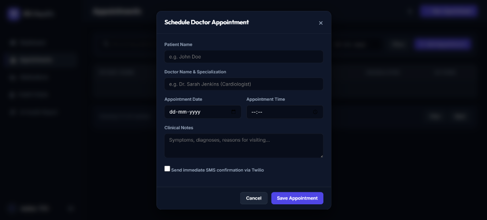
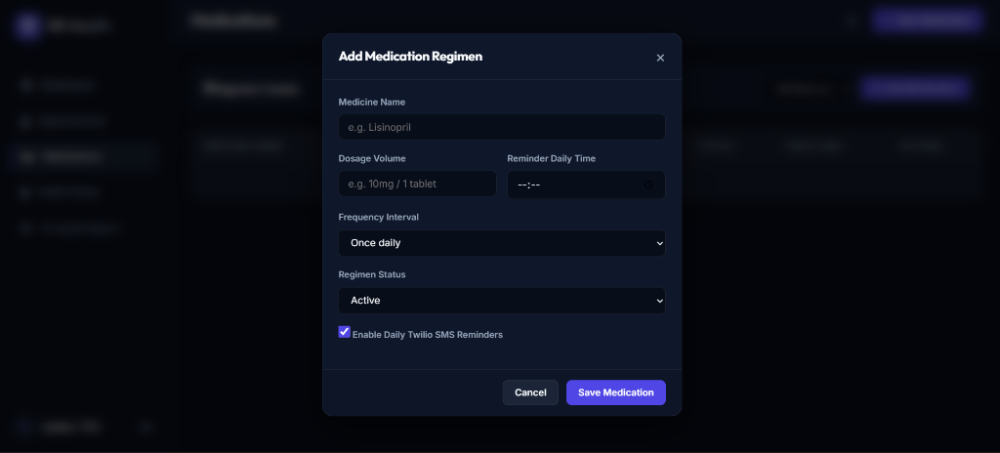
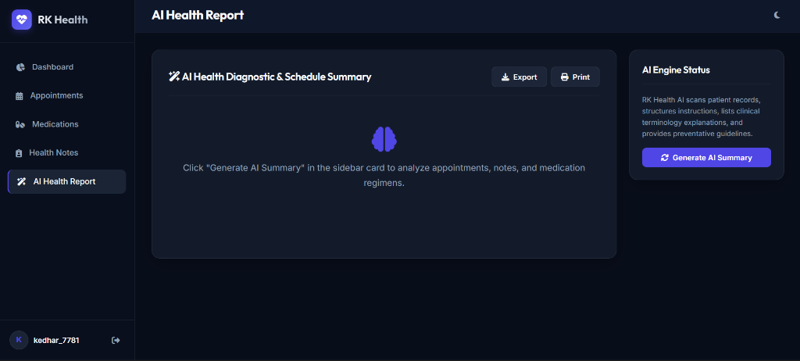

Figure 2.5: Printable view optimized for clinical consults.
A Cloud-Integrated Clinical Portal for Patient Adherence
RK Health is an intelligent patient dashboard designed to resolve key healthcare delivery obstacles: medication non-adherence, missing doctor consultation updates, and clinical document interpretation complexities. By connecting a local SQLite relational engine with a Google Sheets cloud datastore, Google Calendar APIs, Twilio SMS REST client, and OpenAI chat completions, RK Health automates compliance workflows and translates dense medical documents into clear, patient-friendly plain-English reports.
The application is structured around a lightweight Flask (Python) service orchestrating communications between local SQLite databases and cloud integrations. The frontend uses vanilla CSS and JavaScript with Chart.js to display patient adherence logs.
Before accessing the clinical panels, users must authenticate. The portal includes a premium dark-themed lock screen layout that handles signup validations and hashing.

The dashboard is the main control center for the patient. It shows count metrics for appointments, medications, and health logs, followed by compliance stats and appointment lists.

Allows users to input doctor details, scheduled dates, and symptoms notes. Clicking save triggers local SQLite db insertion and initiates the Google Sheet/Calendar webhook sync.

Tracks medicine regimens. Patients can click the "Send SMS" test trigger to verify Twilio's dispatch alert is correctly routed to their mobile phones.

Compiles doctor notes and processes them through an LLM to generate clear medical translations, instructions, and preventative tips.

Clicking the print button opens Chrome's printer overlay. The custom CSS layout formats tables and reports for paper delivery.
import os
import sys
# Append parent directory to system path before standard module imports
sys.path.append(os.path.dirname(os.path.dirname(os.path.abspath(__file__))))
from flask import Flask, send_from_directory
from flask_cors import CORS
from backend.config import Config
from backend.database import init_db
from backend.routes.auth import auth_bp
from backend.routes.appointments import appointments_bp
from backend.routes.medications import medications_bp
from backend.routes.notes import notes_bp
from backend.routes.summary import summary_bp
frontend_dir = os.path.abspath(os.path.join(os.path.dirname(__file__), '..', 'frontend'))
app = Flask(__name__, static_folder=frontend_dir, static_url_path='')
CORS(app, supports_credentials=True)
app.config.from_object(Config)
# Register routes
app.register_blueprint(auth_bp)
app.register_blueprint(appointments_bp)
app.register_blueprint(medications_bp)
app.register_blueprint(notes_bp)
app.register_blueprint(summary_bp)
@app.route('/')
def serve_index():
return send_from_directory(frontend_dir, 'login.html')
if __name__ == '__main__':
init_db()
port = int(os.getenv('PORT', 5000))
app.run(host='0.0.0.0', port=port, debug=True)
RK Health serves as a complete demonstration of how full-stack design patterns and Generative AI can be applied to solve real-world healthcare compliance challenges. By containerizing the deployment with Docker and hosting on Render's cloud servers, the portal is secure, reliable, and easily accessible.